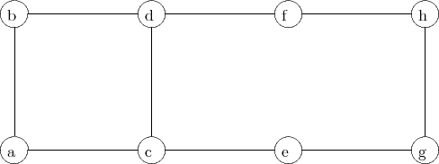

| Name: |
MATP6620/DSES6770
Combinatorial Optimization and Integer Programming
Spring 2009
Midterm Exam, Thursday, March 19, 2009.
Please do all five problems. Show all work. No books or calculators allowed. You may use any result from class, the homeworks, or the texts, except where stated. You may use one sheet of handwritten notes. The exam lasts 110 minutes.
| Q1 | /20 | |
| Q2 | /30 | |
| Q3 | /20 | |
| Q4 | /20 | |
| Q5 | /10 | |
| Total | /100 |
Given the complete graph Kn =: (V,E) on n vertices, a clustering of the vertices is obtained by choosing an integer p and a partition of the vertices into p sets V 1,…,V p satisfying:
V s ∩ V t = ∅ for 1 ≤ s < t ≤ p and ∪s=1pV s = V .
Note that p is not fixed. The incidence vector of this clustering is defined by
Let Q be the set of incidence vectors of clusterings for Kn. Let edge (i,j) have weight wij. The clustering problem for this set of edge weights is then
The edge weights wij can be positive or negative. Valid triangle inequalities for this problem for three distinct vertices i, j, k are
Let U ⊆ V and let p = |U|. Assume p ≥ 5 and p is odd. Let E(U) be the edges with both endpoints in U. Let C ⊆ E(U) be a Hamiltonian tour through the vertices U. Denote the order of the vertices in the tour as i1 -i2 -…-ip -i1. Prove that the following constraint is valid for the clustering problem:
(Note: Linear programming relaxations of knapsack problems can be solved very easily. In particular, here the variables are ordered so that the ratios of the objective function coefficients ci to constraint coefficients ai satisfy
Then the solution is to take x1 as large as possible, then x2 as large as possible, then x3 as large as possible, and then x4 as large as possible. For the initial LP relaxation, this gives a solution of x = (1,, 0, 0).
It may be useful to know that 0.7 × 35 = 24.5.)
The constraint x2 + x4 ≤ 2 follows trivially from the upper bounds on the binary variables. By thinking of this as a constraint when x1 = 0, lift it to give a stronger valid constraint of the form

Prove that the valid inequality
does not define a facet of the convex hull of the set of incidence vectors of cuts.